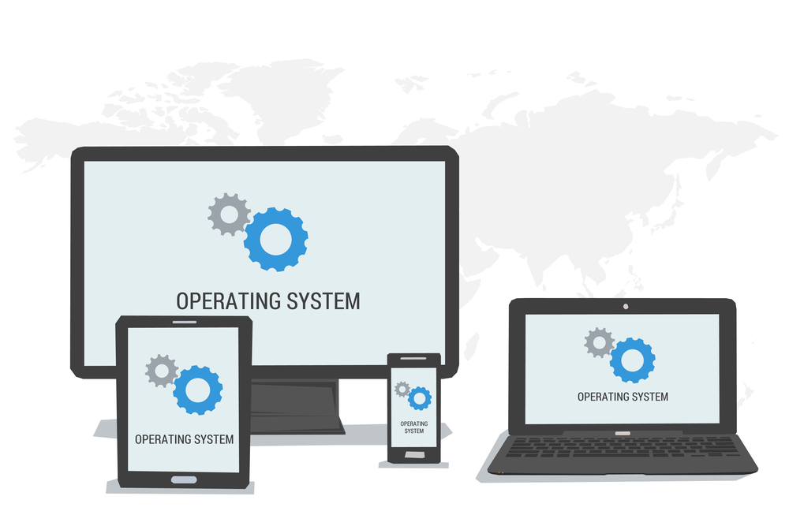

Operating system

links
This is main page for Operating system feed
Definition of Operating system:
1. An operating system is a program that controls the execution of application programs and acts as an interface between the user of a computer and the computer hardware.
2. A more common definition is that the operating system is the one program running at all times on the computer (usually called the kernel), with all else being application programs.
3. An operating system is concerned with the allocation of resources and services, such as memory, processors, devices, and information. The operating system correspondingly includes programs to manage these resources, such as a traffic controller, a scheduler, memory management module, I/O programs, and a file system.